组织架构与员工
员工在客户端通讯录里看到的部门结构，就是企业管理员在这里维护的组织架构。本章介绍如何浏览和搜索组织树、新增与删除部门、新增员工，以及修改员工资料、调整部门、设置角色、停用账号和重置密码。
- 适用：企业管理员
- 位置：左侧导航「本企业」→「组织架构」页签
「本企业」页面
点左侧导航的 本企业，进入本企业的管理页面。页面上方是企业的基本信息，下方按页签分成几块：
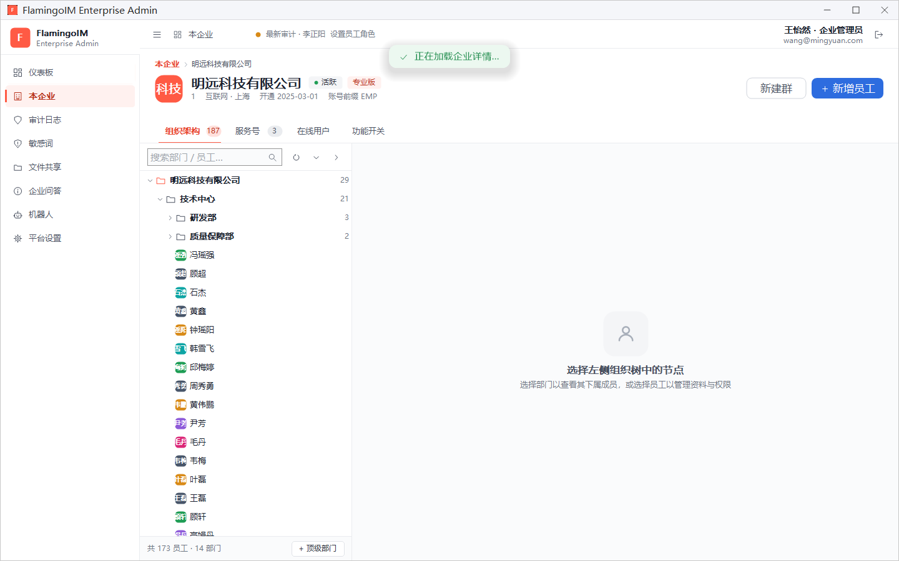
- 页头：企业名称、状态（如 活跃）和套餐（如 专业版）。第二行依次是企业 ID、行业 · 地区、开通日期和账号前缀。账号前缀用于生成新员工的登录账号，未设置时显示
EMP，由平台超级管理员在企业设置里修改。 - 右上角按钮：新建群 用于直接为部门或项目建群（见「建群与在线用户」），新增员工 见本章「新增员工」一节。
- 页签：组织架构（右侧数字是员工数与部门数之和）、服务号（见「服务号」）、在线用户（见「在线用户」）和 功能开关（见「功能开关」）。
页面打开时顶部会短暂出现「正在加载企业详情…」的提示，加载完成后自动消失。
浏览与搜索组织树
「组织架构」页签左侧是组织树，最上面一级是公司本身，下面是各级部门和直接挂在部门下的员工。点部门左侧的箭头可以展开或收起；部门右侧的数字是它的直接下级数量（子部门加上直接挂载的员工）。树的底部显示全企业的统计，例如 共 173 员工 · 14 部门。
搜索框右侧的三个图标从左到右依次是：
| 图标 | 作用 |
|---|---|
| 圆形箭头 | 刷新组织架构，重新从服务器读取 |
| 向下箭头 | 展开全部部门 |
| 向右箭头 | 折叠全部部门 |
搜索部门或员工
在 搜索部门 / 员工… 框中输入名称，组织树会只保留匹配的部门或员工，以及它们的各级上级部门，方便看清此人所在的位置。清空搜索框即可恢复完整的树。
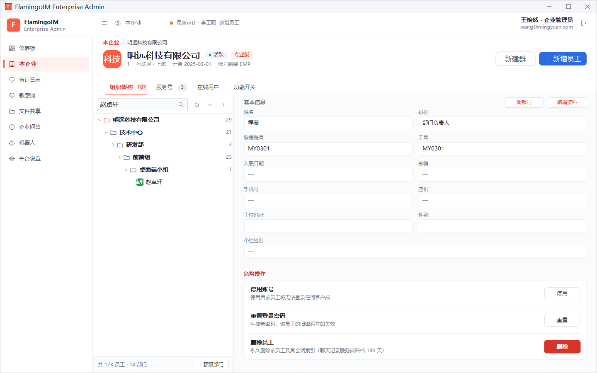
节点上的快捷按钮
鼠标移到组织树的某一行上时，行右侧的数字会换成几个小按钮：
- 部门行：文件夹图标为新增子部门，人形图标为新增员工，红色垃圾桶图标为删除部门。最上面代表公司本身的那一行不能删除，所以没有删除按钮。
- 员工行：只有删除按钮。
查看与维护部门
在组织树里点选一个部门，右侧显示该部门的概况：
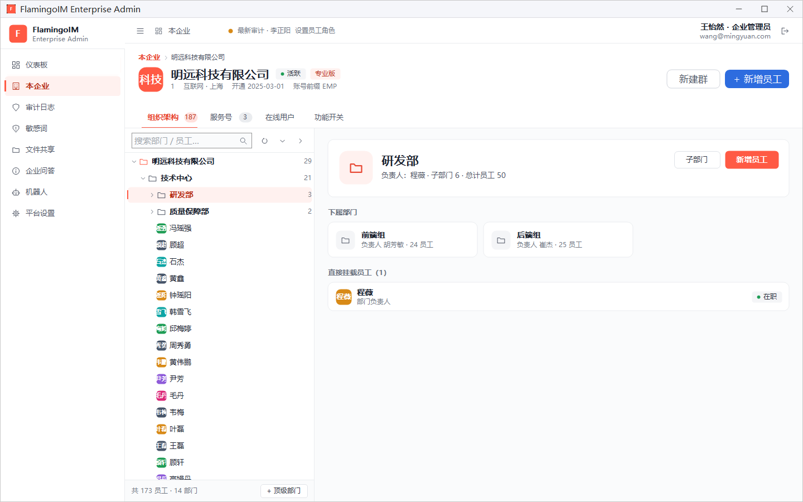
- 部门信息：部门名称，以及负责人、子部门数和总计员工数（包含所有下级部门的员工）。
- 下属部门：每张卡片显示一个直属子部门的负责人和员工数。
- 直接挂载员工：直接属于本部门（不在任何子部门里）的员工，右侧标签显示在职状态：在职、休假 或 已停用。
新增部门
有三个入口：部门详情右上角的 子部门 按钮、组织树部门行上的文件夹按钮，以及树底部的 + 顶级部门。前两个在当前部门下新建子部门，最后一个直接在公司下新建一级部门。弹出的 新增部门 对话框中：
- 顶部的 挂载至 显示新部门的上级，请先核对。
- 填写 部门名称（必填）。
- 按需在 部门负责人（可选） 中选择负责人。可以直接输入姓名筛选，留空表示暂不设置。
- 点 创建。
删除部门
把鼠标移到部门行上，点红色的删除按钮，在确认框中点 删除。
新增员工
新增员工有三个入口：页面右上角的 新增员工、部门详情里的 新增员工，以及组织树部门行上的人形按钮。右上角的按钮会把员工加到当前选中的部门；没有选中部门（或选中的是某位员工）时，加到公司这一级。
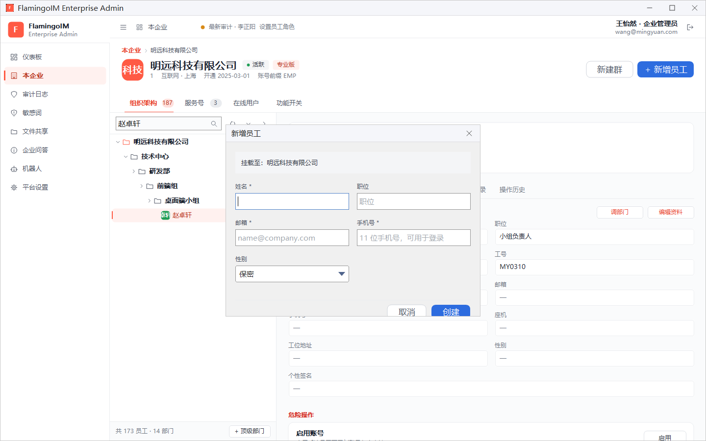
- 核对顶部的 挂载至，确认员工会加到正确的部门。
- 填写 姓名（必填）和 职位。
- 填写 邮箱（必填）。
- 填写 手机号（必填）：11 位、以 1 开头的手机号。员工以后可以用这个手机号登录客户端。
- 选择 性别：保密、男或女。
- 点 创建。
创建成功后会弹出「员工创建成功」对话框，显示系统生成的 登录账号 和 初始登录密码。点 复制密码 可以把密码复制到剪贴板。
员工详情
在组织树里点选一位员工，右侧上方显示员工的头像、姓名、在职状态、职位和工号，下方分为六个页签：
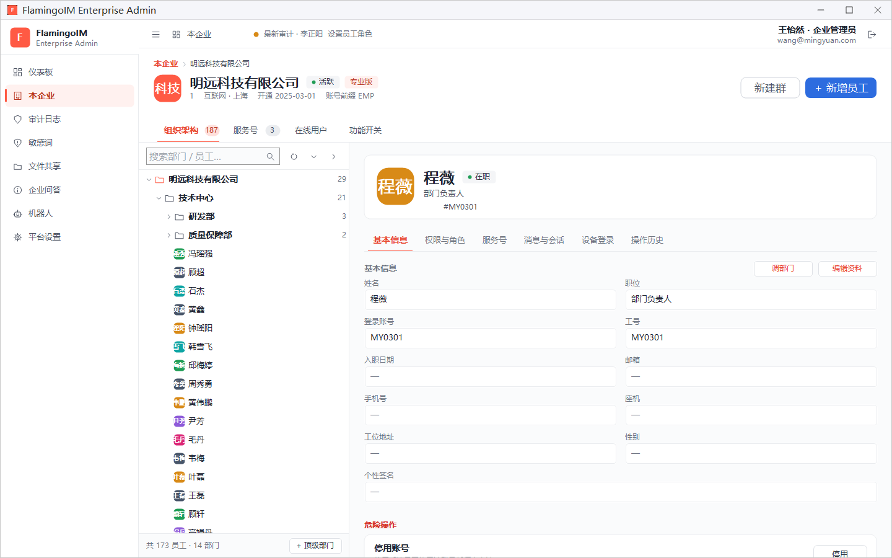
| 页签 | 内容 |
|---|---|
| 基本信息 | 员工资料，以及「调部门」「编辑资料」和危险操作 |
| 权限与角色 | 员工在企业内的角色和权限矩阵 |
| 服务号 | 这位员工在客户端能看到哪些服务号 |
| 消息与会话 | 近 14 天的消息活跃度 |
| 设备登录 | 当前在线的设备与登录历史 |
| 操作历史 | 近 30 天与这位员工有关的管理操作 |
基本信息与修改资料
「基本信息」页签列出 姓名、职位、登录账号、工号、入职日期、邮箱、手机号、座机、工位地址、性别 和 个性签名，没有填写的项显示「—」。要修改时点右上角的 编辑资料，打开「修改员工资料」对话框：
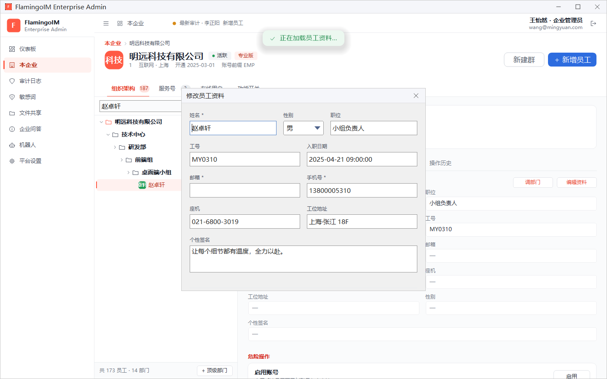
- 按需修改各项资料。姓名、邮箱 和 手机号 为必填项，手机号须是 11 位、以 1 开头的号码。
- 点对话框底部的 保存；不想保存时点 取消。
登录账号不能在这里修改。个性签名 员工本人也可以在客户端中修改。对话框打开时，页面顶部会出现「正在加载员工资料…」的提示，这是在读取该员工的最新资料，属于正常现象。
调整部门
点「基本信息」页签右上角的 调部门，会弹出本企业的部门列表（按层级缩进显示），点选新部门即可把员工调过去，完成后提示「员工部门已调整」。
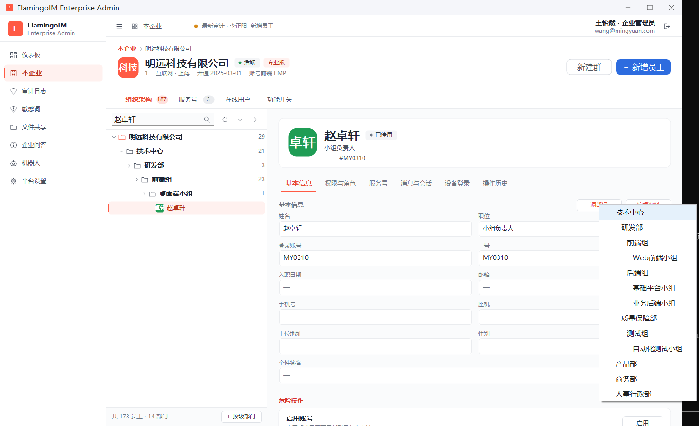
危险操作：停用、重置密码与删除
「基本信息」页签的底部是 危险操作 区域，每项操作都会先弹出确认框：
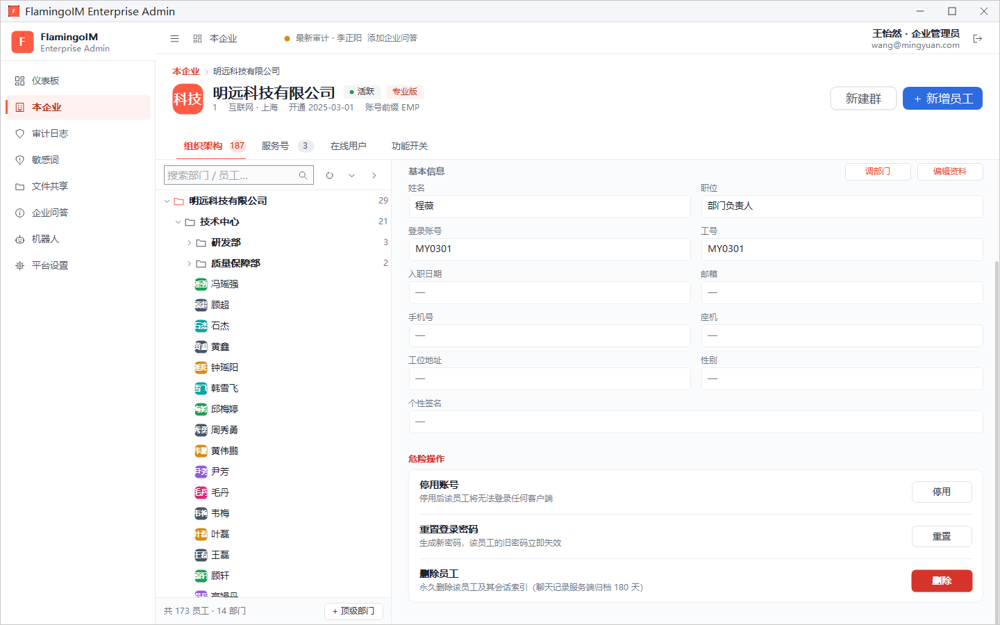
| 操作 | 按钮 | 效果 |
|---|---|---|
| 停用账号 | 停用 | 停用后该员工将无法登录任何客户端。账号停用后，这一项会变成 启用账号，点 启用 可让员工重新登录。适合员工长期离岗、需要暂时冻结账号的情况。 |
| 重置登录密码 | 重置 | 生成新密码，该员工的旧密码立即失效，已登录的设备会被强制下线。新密码显示在「密码已重置」对话框里，同样只显示一次，可以点 复制密码。 |
| 删除员工 | 删除 | 永久删除该员工的账号及其会话索引，操作不可撤销；聊天记录在服务端归档保存 180 天。 |
权限与角色
「权限与角色」页签上方是员工在企业内的 角色，点选一张角色卡片即可修改，确认框中点 修改 后生效：
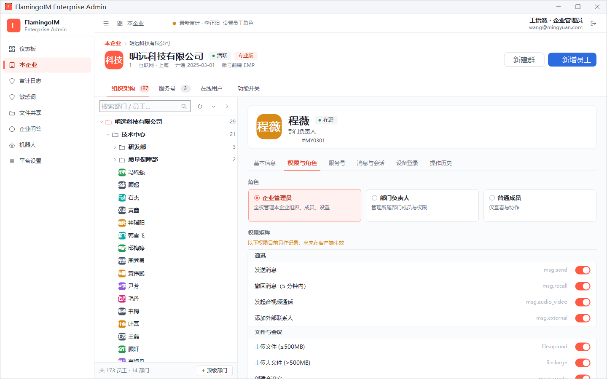
| 角色 | 页面上的说明 |
|---|---|
| 企业管理员 | 全权管理本企业组织、成员、设置 |
| 部门负责人 | 管理所属部门成员与权限 |
| 普通成员 | 仅查看与协作 |
下方的 权限矩阵 按「通讯」「文件与会议」「群组」「数据」分组列出各项权限（如发送消息、撤回消息、上传文件、创建群组、导出个人聊天记录等），拨动开关后立即保存。
服务号
「服务号」页签显示这位员工在客户端能看到几个服务号，以及每个服务号是通过哪种范围覆盖到他的：企业 · 全员 表示服务号绑定了整个企业，「部门 · 部门名」表示绑定了他所在的部门，直接绑定 表示单独绑定了这位员工。绑定范围在「服务号 → 绑定范围」中修改。
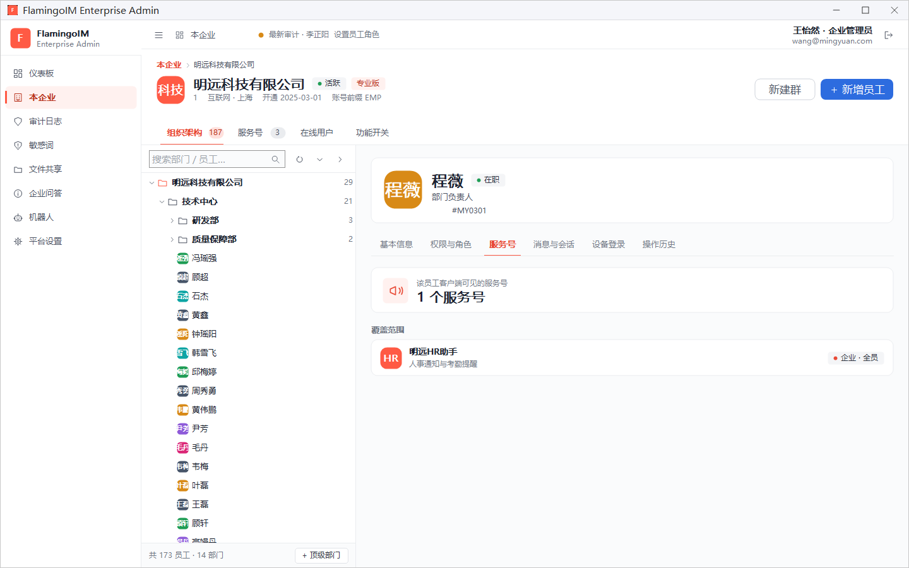
消息与会话
「消息与会话」页签显示这位员工近 14 天的消息活跃度：发送、接收 的消息条数和 会话数，发送数下方还有每天的小柱状图。这里只有数量统计，不显示消息内容。
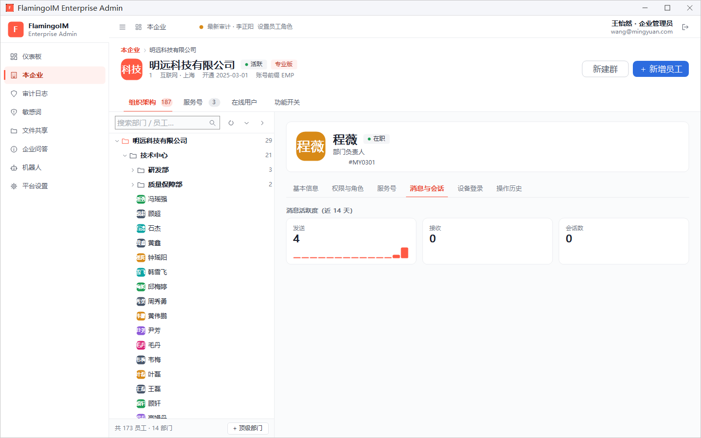
设备登录
「设备登录」页签的 已登录设备 列出这位员工当前在线的设备（如 PC 客户端）；登录历史 按时间、设备、IP、位置和结果列出登录记录。员工的电脑丢失或账号可能被他人使用时，点右上角的 强制下线全部设备，确认后该员工的所有设备都会下线，需要重新登录才能继续使用。如果担心密码已经泄露，请同时重置登录密码。
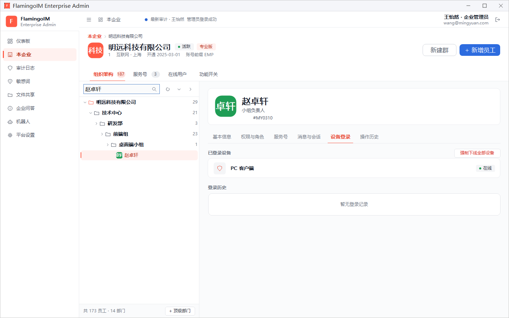
操作历史
「操作历史」页签列出近 30 天内与这位员工有关的管理操作，没有记录时显示「最近 30 天暂无操作记录」。全企业的完整记录请到审计日志中查看。
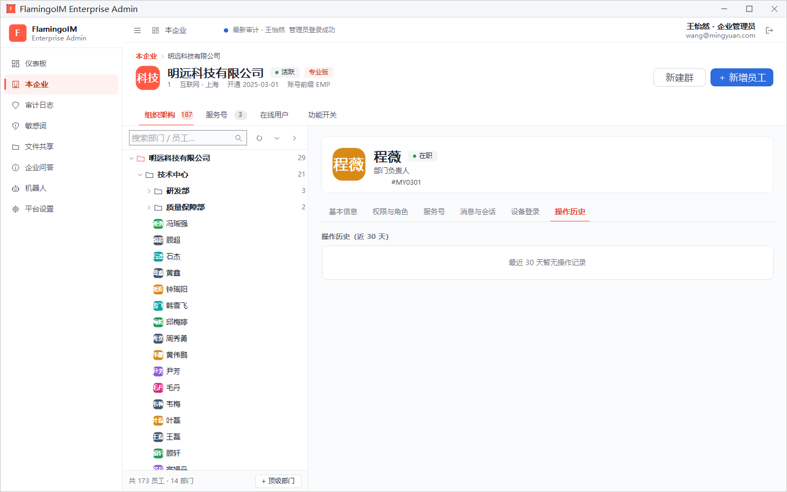